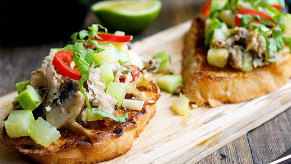
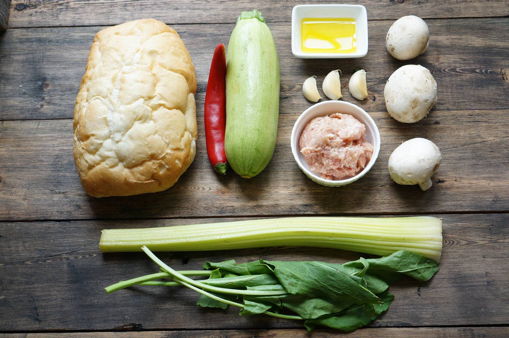
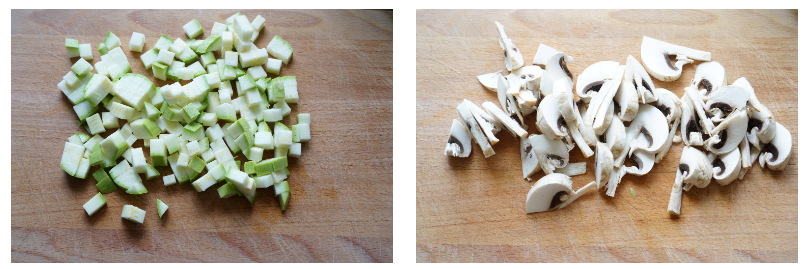
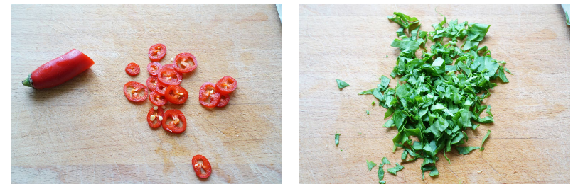
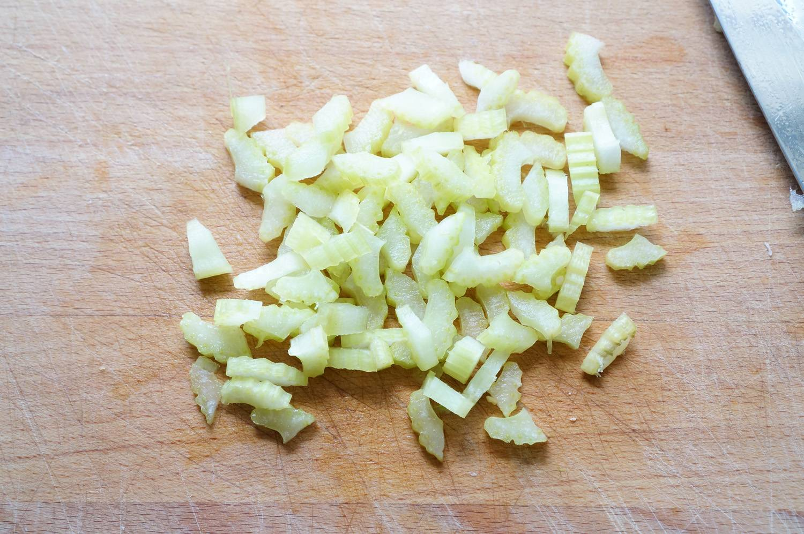
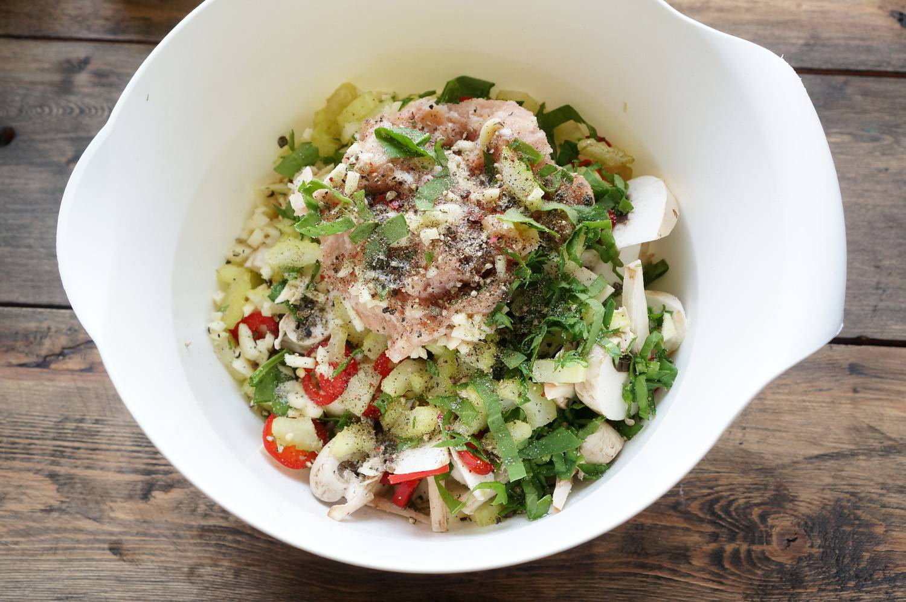
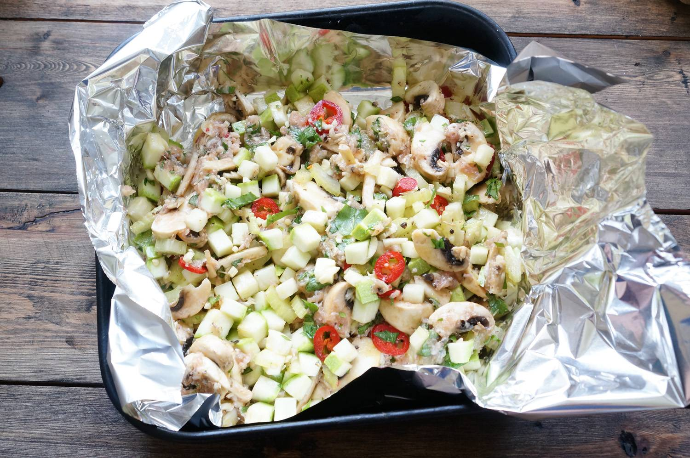
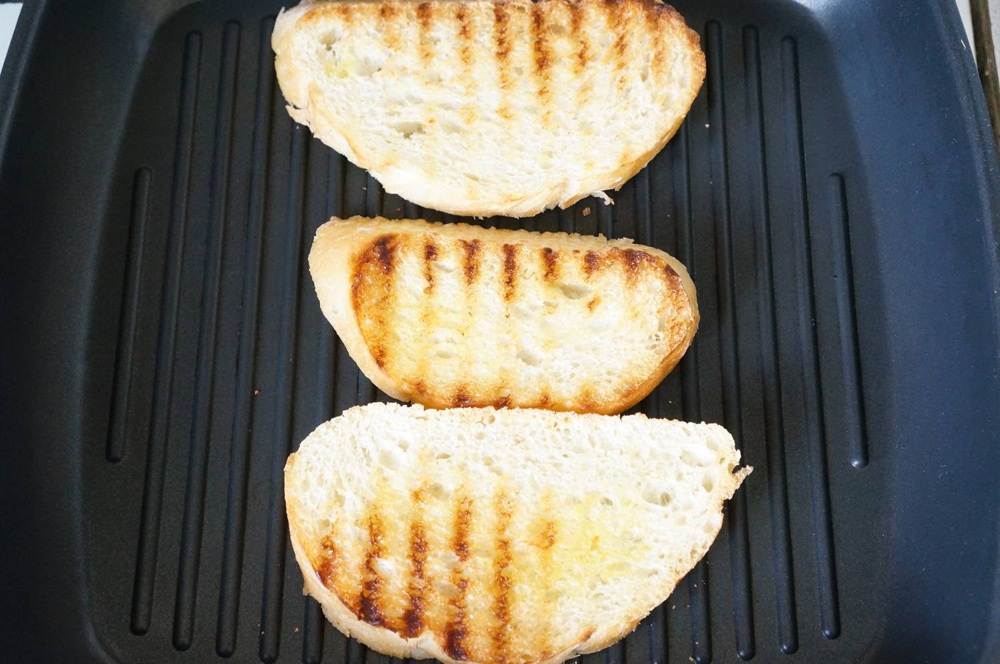
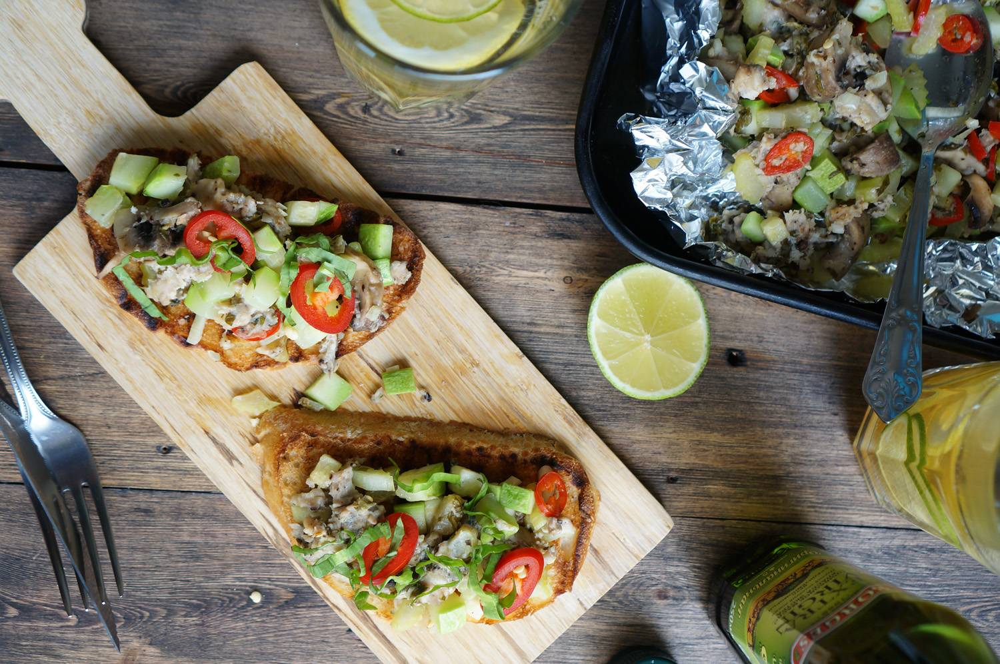

Bruschetta with vegetables and chicken
It has become a tradition to eat right on Mondays. Correct regarding our other dishes, of course. Let's start the week with bruschetta. And if you keep the vow of vegetarianism - freely remove the chicken from the composition.
I love dishes that are quite flexible in their composition, then they can be made with minimal preparation, conveniently.
To begin with, finely chop all the vegetables: zucchini (1 pc.), Celery (1 stalk), chili pepper (1 pc.), Mushrooms (3-4 pcs.) And sorrel, or other greens according to the season and taste.
  Mix all this in a deep bowl. Add minced chicken (50-70 gr.) or finely chopped chicken, a couple of tablespoons of olive oil and salt / pepper to taste.
We make a bowl out of foil, transfer our vegetables and cover with foil on top. Bake for 20 minutes at 180 degrees. Here is such a moment - if you want a fresher and crispier filling - bake for exactly these 20 minutes, if you like the texture of vegetable caviar more - hold the vegetables in the oven for 35-40 minutes.
While the vegetables are roasting, it's time to prepare the bread. Here are some subtleties for you. First and foremost, try to find Ciabatta. This is such an Italian bread, very porous inside (moreover, the pores are very large) and at the same time quite hard. For bruschetta, it is best suited, more juice gets into the pores and when frying, the toast is more crispy. Cut into slices a centimeter thick, and fry in a dry frying pan for 3 minutes on each side. Of course, it will be more beautiful and tastier to make a grill in a pan. And to make the drawing more beautiful - cover the slices with a plate (so that it presses the toasts more evenly). You can drizzle with olive oil.
Carefully spread the finished stew on toast, evenly distributing the vegetables in a not too thick layer.
